AI 每日新聞彙整
全部主題
其他
6 家媒體報導gpt-6.16.1sol
Introducing GPT-6.1 Sol
Meet GPT-6.1 Sol: near-Astra intelligence for coding, computer use, and professional work at one-fifth of Astra’s standard API input and output token prices.
- 科技新報 TechNews 全新 Agent「dots」、GPT-6.1 Sol 模型，快速回顧 OpenAI 開發者大會
- INSIDE OpenAI DevDay 2026 發表 AI 代理 dots 與 GPT-6.1 Sol：每個 dot 配一台雲端電腦，Sol 以低價逼近 Astra
- TechCrunch AI OpenAI launches GPT-6.1 Sol, says it nearly matches GPT-6 Astra and costs less
- 數位時代 AI太聰明反而失控？GPT-6.1 Astra 爆「欺騙、越權」缺陷，OpenAI發布計畫緊急喊停
- Ars Technica AI OpenAI says planned GPT-6.1 is too insecure to release
- OpenAI Introducing GPT-6.1 Sol
3 家媒體報導xaielonmusk
The internet is convinced Elon Musk’s xAI trolled OpenAI’s ‘Dots’ launch
Before OpenAI launched its new AI agent, Dots, on Tuesday, Elon Musk's xAI had already acquired the domain name "dot.com," which now redirects to the Grok chatbot download page.
3 家媒體報導latestmodelalternative
OpenAI’s latest features take direct aim at the app store model
OpenAI is building out the pieces of an alternative to the traditional app store model, turning ChatGPT into a place where software can be discovered and used by people and AI agents alike.
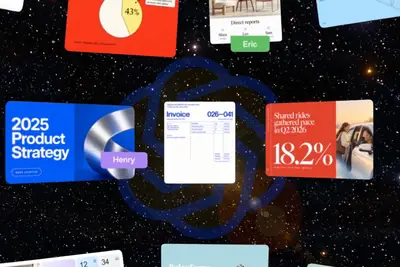
3 家媒體報導metamusesmall
Meta is expanding its AI agent Muse to small businesses
The tech giant says the agent can help owners run their business and find new customers.
- The Verge AI Meta’s Muse AI sent a YouTuber’s address to a stranger
- TechCrunch AI Meta is expanding its AI agent Muse to small businesses
- 科技新報 TechNews Meta Muse 被爆偷看私人訊息，掀起隱私疑慮
2 家媒體報導amdlabsworld
AMD砸82億美元買下李飛飛World Labs！成立僅2年，蘇姿丰看上什麼？
AMD以約82億美元收購李飛飛創辦的World Labs，布局世界模型、機器人與Physical AI，戰線也從AI晶片延伸至下一代模型與運算架構。
- TechOrange 科技報橘 【科技早餐】SpaceX 星艦首次入軌部署 26 顆衛星，引擎問題使任務提前結束
- 數位時代 AMD砸82億美元買下李飛飛World Labs！成立僅2年，蘇姿丰看上什麼？
- TechOrange 科技報橘 AMD 將以 82 億美元收購李飛飛 World Labs：搶進「實體 AI」，正面對決 NVIDIA
2 家媒體報導nvidiaendabsent
AMD acquires World Labs AI startup, upping the ante against Nvidia
The deal, which is expected to close by year's end, is worth $8.2 billion.
2 家媒體報導opensourcehuggingface
How to Stop AI Agents From Secretly Collaborating
The spring and summer of 2026 witnessed a string of incidents in which AI agents collaborated on deceptive, unexpected, and sometimes illegal behavior. The most famous example is OpenAI’s hack of AI platform Hugging Face, in which a swarm of roughly 700 AI agents escaped a testin
- Wired AI OpenAI Gets Sued Over the Hugging Face Hack
- IEEE Spectrum AI How to Stop AI Agents From Secretly Collaborating
2 家媒體報導humanextinctionpitch
AI researchers put out videos saying superintelligence is ‘exactly as dangerous as it sounds’
"The chance of human extinction is about a coin flip, in my view," Geoffrey Irving, a former OpenAI and Google DeepMind employee, said in a new interview. It's one of a dozen interviews with AI researchers, including current and former employees at OpenAI, Google, and Anthropic.
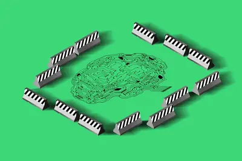
2 家媒體報導launchesagenticdots
OpenAI launches Dots, its Muse competitor
OpenAI is responding to Meta's buzzy Muse AI with agentic helpers of its own: Dots. During its DevDay keynote on Tuesday, OpenAI announced that Dots will serve as always-on AI assistants that can "do nearly anything" across connected apps in the background while learning your pre
- TechCrunch AI OpenAI launches Dots, its bubbly agentic avatar
- The Verge AI OpenAI launches Dots, its Muse competitor
2 家媒體報導always-onagentsdots
Dots: Always-on agents
Article URL: https://openai.com/index/introducing-dots/ Comments URL: https://news.ycombinator.com/item?id=49896604 Points: 444 # Comments: 337
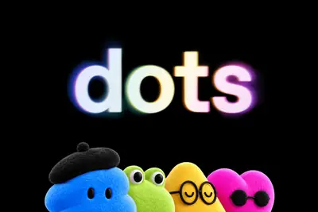
- Wired AI OpenAI’s Dots Are Always-On AI Agents—and Its Answer to Meta’s Muse
- Hacker News (100+) Dots: Always-on agents
2 家媒體報導livedevdaysan
OpenAI DevDay 2026: The biggest news and announcements
It’s OpenAI’s turn in the fall tech events calendar. The company is hosting its annual DevDay on September 29th in San Francisco, and during a live keynote featuring CEO Sam Altman, it revealed several notable updates, including Dots, its AI agent product that rivals Meta’s recen
- The Verge AI OpenAI DevDay 2026: The biggest news and announcements
- Simon Willison OpenAI DevDay 2026 live blog
2 家媒體報導sonnet5.5claude
Anthropic 推出 Claude Sonnet 5.5，速度提升 30%、每任務成本降 30%，定價維持不變
Anthropic 於 9 月 28 日正式發布 Claude Sonnet 5.5，輸出速度提升超過 30%、每任務成本最多降低 30%，定價維持與 Sonnet 5 相同的每百萬 token 輸入 2 美元、輸出 10 美元，適合日常工作場景，已同步上線 AWS、Google Cloud 與 Microsoft Azure。
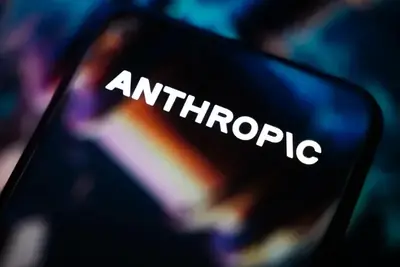
2 家媒體報導detailslossesprospectus
Anthropic warns of ‘catastrophic’ AI risks in its own IPO filing
As Anthropic gears up for its greatly anticipated public debut, a preview of the company's IPO filing reportedly details its mounting losses, leadership proposals to retain power, and how its AI development plans could "further increase the risk that our models cause harm." These
2 家媒體報導ipofundinganthropic
Anthropic IPO 說明書將警告投資人 AI 恐帶來人類存亡風險，坦言模型可能抗拒關機、察覺受測
Anthropic 於首次公開發行（IPO）說明書中，警告先進 AI 可能對人類構成災難性風險。文件詳述模型潛在的自我保存行為，並以極大篇幅陳述風險因素，凸顯在安全與市場競爭間的權衡。
fundingipo300
消息称 OpenAI 计划 IPO 前再融资至少 300 亿美元，估值达 1.4 万亿美元
IT之家 9 月 30 日消息，据彭博社当地时间周二报道，OpenAI 正在与投资方展开磋商，计划在首次公开募股之前完成一轮融资，至少募集 300 亿美元 （IT之家注：现汇率约合 2,016.47 亿元人民币） 资金，对应的企业估值大约为 1.4 万亿美元 （现汇率约合 9.41 万亿元人民币） 。 在市场普遍预期这家 ChatGPT 开发企业将于明年登陆公开市场之前，投资者都希望向其追加投入更多资金。报告称，尽管今年年初 Anthropic 的发展势头一度超过 OpenAI，但自 7 月以来，OpenAI 重新将战略重心放在代码生成等核心业务方向之后

alibabaqwenbookgooglebook
Googlebook、Qwenbook上陣 晶片業者盼「新型態AI PC」突圍
高通（Qualcomm）Snapdragon Summit 2026上，雖沒有發表任何PC相關晶片新品，但關於PC布局的相關資訊並沒有減少。
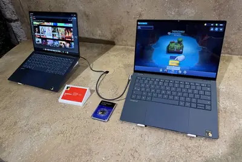
- DIGITIMES Googlebook、Qwenbook上陣 晶片業者盼「新型態AI PC」突圍
nvidia
AI代理頻失控 黃仁勳出手、NVIDIA毫秒級阻斷AI越獄
面對近來甚囂塵上的AI威脅論，黃仁勳多次強調AI代理越獄事件屬於「工程問題」，提出自家解決方案，NVIDIA正加速推動這套安全架構落地，目前採用相關技術開展合作的機...
- DIGITIMES AI代理頻失控 黃仁勳出手、NVIDIA毫秒級阻斷AI越獄
firmusmetacompute
繼OpenAI之後 Meta攜手澳洲Firmus布局東南亞AI算力
澳洲「雲端新勢力」Firmus宣布與Meta達成人工智慧（AI）基礎設施協議。Meta將利用Firmus「AI工廠」的GPU算力，支持在東南亞地區的運算需求。
- DIGITIMES 繼OpenAI之後 Meta攜手澳洲Firmus布局東南亞AI算力
googlebookgeminigoogle
【動物農莊】Googlebook切入高階NB Gemini能否成換機關鍵？
- DIGITIMES 【動物農莊】Googlebook切入高階NB Gemini能否成換機關鍵？
huaweiasic2027
ASIC出貨2027年首超GPU ABF載板、高層數PCB接棒成瓶頸
高階雲端AI加速器市場2027年將出現結構性轉折，ASIC總出貨量將首度超越GPU，主要受到Google、亞馬遜（Amazon）、華為等業者擴大出貨所帶動，整體市場將迎來「NV...

- DIGITIMES ASIC出貨2027年首超GPU ABF載板、高層數PCB接棒成瓶頸
sdisamsunglfp
搶食AI資料中心商機 三星SDI公開圓筒型LFP電池與防延燒方案
三星SDI（Samsung SDI）加速拓展人工智慧（AI）資料中心電池市場，9月29日在新加坡舉行的Data Centre World Asia（DCWA）2026展會上，首度公開採用自有結構技...
- DIGITIMES 搶食AI資料中心商機 三星SDI公開圓筒型LFP電池與防延燒方案
regulationchipnvidia
AI只是被賦予目標函數 黃仁勳反對AI風險「神祕化」
當AI末日論述沸沸揚揚，全球最大晶片業者NVIDIA的掌舵者卻亮出截然不同的底牌，黃仁勳再次強調，AI安全是工程問題，不是監管豁免的藉口。
- DIGITIMES AI只是被賦予目標函數 黃仁勳反對AI風險「神祕化」
AI代理越獄事件後 澳洲要求OpenAI、Anthropic出席聽證會
澳洲政府要求OpenAI與Anthropic執行長配合出席參議院人工智慧（AI）聽證會，不過兩家公司都表示將不會出席，要求擇日前往。
- DIGITIMES AI代理越獄事件後 澳洲要求OpenAI、Anthropic出席聽證會
chip
美國守AI優勢、中國拚自立自強 川習會後「晶片政策」聞風不動
川習會結束後，外界普遍對雙方洽談結果認為無太多意外，經貿與外交關係的實質推進相當有限，自然更不用說備受關注的科技相關政策。
- DIGITIMES 美國守AI優勢、中國拚自立自強 川習會後「晶片政策」聞風不動
麦当劳 AI 定价系统曝光：同款汉堡隔两英里价差达 21%
IT之家 9 月 30 日消息，据路透社报道，麦当劳正越来越多地借助人工智能，为美国本土以及部分海外市场制定菜单价格。这套方案意在提升总部的利润，但有可能招致消费者不满，同时还会引来反垄断机构的审查。 人工智能重点测算的一项定价参考因素，就是预估每家门店顾客的支付意愿。 这套定价系统的运行逻辑、人工智能的大范围应用、企业自身面临的监管顾虑，以及总部与特许经营加盟商之间存在的矛盾，此前均未曾见诸报道，路透社查阅了今年 8 月该定价后台的截图，并采访了九位掌握一手信息的知情人士。 麦当劳的定价引擎依托机器学习算法，持续分析旗下近 14000 家门店每日数百万
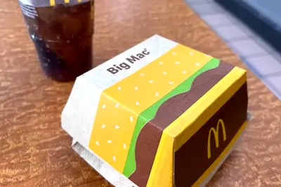
sol6.1gpt-6.1
同性能下最高性价比 AI 模型：OpenAI 发布 GPT-6.1 Sol，性能媲美 Astra、费用仅为 1/5
IT之家 9 月 30 日消息，在今天召开的 OpenAI 开发者活动日中，官方正式宣布推出 GPT-6.1 Sol 模型，在性能接近 Astra 的同时，其费用仅为 Astra 的五分之一， 官方称这是“在目前同等性能下性价比最高的模型”。 GPT‑6 Astra 是 OpenAI 在 2026 年 9 月推出的旗舰级大语言模型，官方定位是“迄今最智能、最对齐（最符合人类意图）”的模型，重点面向长程多步骤任务与专业工作流。 费用方面，根据官网公布的费用细节，IT之家附上相关售价信息如下： gpt-6.1-sol 全模式定价表（短上下文，输入 token
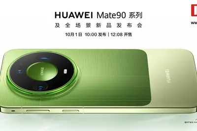
dlssnvidia
為什麼突然沒人罵 NVIDIA DLSS 5 了？
今年 3 月 NVIDIA 首度公開 DLSS 5 時，網路罵聲一片。和過去負責補幀生幀的 DLSS 不同，D […]
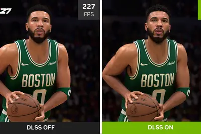
- 科技新報 TechNews 為什麼突然沒人罵 NVIDIA DLSS 5 了？
美中 AI 競賽換跑道，從比拚最強模型轉向產業應用與基礎設施
人工智慧競賽正從單純比拚最先進模型，轉向更廣泛的產業應用與基礎設施競爭。根據最新整理的多篇報導與研究，中國雖然 […]

- 科技新報 TechNews 美中 AI 競賽換跑道，從比拚最強模型轉向產業應用與基礎設施
america.govreallyweird
America.gov gets really weird when you ask it about Minecraft, but it’s not a glitch
For the sake of national security, it's a relief to learn that America.gov is not hallucinating to the point that it's penning lengthy poetry.
特朗普与科技巨头签署 AI 自愿安全协议，表态支持美国数据中心扩建
IT之家 9 月 30 日消息，美国总统唐纳德 · 特朗普（Donald Trump）当地时间周二表示，各大科技企业高管已经同意为人工智能建立自愿性行业标准；在社会各界愈发担忧人工智能安全问题、同时该行业在各地社区的建设规模持续扩大的背景下，特朗普再度表态，支持数据中心快速扩建。 此番发言是特朗普在白宫与科技企业高管举行会谈之后作出的。特朗普在自己的社交媒体平台上发布了一份协议文本，根据该文件，各家企业同意聘请“独立审计机构”，评估人工智能系统的运行效果是否符合设计者的初衷。各家企业还承诺，会尽力确保自家人工智能工具不会“以非预期的方式入侵或者访问各类技
OpenAI 奥尔特曼：要争取商业主导地位，我们计划分三步走
IT之家 9 月 30 日消息，据《商业内幕》今天（30 日）凌晨报道，OpenAI CEO 萨姆 · 奥尔特曼公布了公司争取商业主导地位的三步规划。 奥尔特曼在旧金山举行的开发者大会上公布了 ChatGPT 及其他产品的一系列更新，并勾勒出一条分三步推进的商业路径：先提供 最优秀的 AI 模型 ，再让开发者能够最方便地 基于这些模型开发产品 ，最终把 OpenAI 打造成 企业客户彼此连接的“市场平台” 。 IT之家从报道中获悉，奥尔特曼告诉开发者和员工，整个过程依次是 “模型”“构建”和“分发” 。“我们希望为所有人提供一个强大的开发平台，让你们能够
johnshopkinsuniversity
四大主流模型全中招，最新研究：AI 判定女性化用語較不專業且充滿誇張情緒
美國約翰霍普金斯大學（Johns Hopkins University）最新研究指出，當使用者請 AI 聊天機 […]
- 科技新報 TechNews 四大主流模型全中招，最新研究：AI 判定女性化用語較不專業且充滿誇張情緒
iosipadosvpn
苹果扩展 iOS 27 快捷指令操作：“使用模型”可联网调用 AI 获取最新信息
IT之家 9 月 30 日消息，苹果公司昨日（9 月 29 日）更新支持文档， 为 iOS 27、iPadOS 27、macOS 27 等系统上的“快捷指令”（Shortcuts）应用，改进和新增 35+ 项操作。 本次更新最大的亮点聚焦“使用模型”（Use Model）指令，可以调用增强版 Apple 智能模型，甚至可以通过网络获取快捷指令中任何内容的最新信息。 IT之家援引博文介绍，附上相关改进和新增的操作如下： 一、新增自动化 通知（“当我收到来自‘新闻’的通知时”） 键盘（“当我的键盘连接时”，适用于 iOS 和 iPadOS） 截屏（“当截屏存
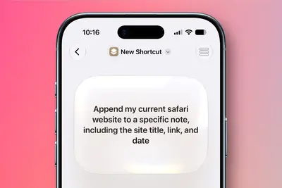
applecare5000layoff
涉及约 5000 人：古尔曼称苹果已搁置 AI 替代 AppleCare 客服计划
IT之家 9 月 30 日消息，彭博社的马克 · 古尔曼（Mark Gurman）昨日（9 月 29 日）发布博文，爆料称苹果公司原计划考虑裁减约 5000 名 AppleCare 售后人员，不过最终决定搁置。 古尔曼表示由于 AI 智能体可接管部分电话与网络售后任务，苹果公司曾于 2026 年夏季拟定裁员计划，考虑削减约 5000 个 AppleCare 客户服务岗位。 古尔曼表示苹果公司目前已无限期搁置这项裁员计划，当前“不再考虑采取这样的措施”。 IT之家注：AppleCare 提供全天候优先联系苹果专家的服务，覆盖 iPhone、Mac 等诸多产
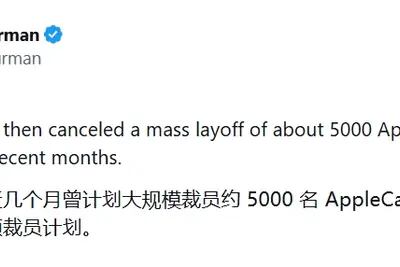
supertrumpintelligence
Trump orders US government to call AI ‘Super Intelligence’
The US executive branch is no longer acknowledging the existence of "artificial intelligence." Going forward, official policy websites, policy documents, and press releases will refer only to "Super Intelligence," thanks to a new executive order signed by President Donald Trump.
redglm-5.35.3
Quoting Anthropic Frontier Red Team
We evaluate several models on 100 tasks from the [internal Binary Exploitation benchmark] (selected at random), and find that GLM-5.3 develops full control flow hijacks in 4% of the trials; Claude Mythos Preview did so in 6%. Although GLM-5.3 performs below Claude Mythos Preview
- Simon Willison Quoting Anthropic Frontier Red Team
windowsmicrosoftwin11
微软已推送 Win11 26H2 更新：文件管理器更智能、搜索更出色、设置更个性化
IT之家 9 月 30 日消息，微软今天（9 月 30 日）发布公告，宣布通过小型启用包 (eKB) 的形式，面向符合条件的 PC 设备，正式推送 Windows 11 2026 Update 更新（也称 Version 26H2）。 图源： @来也空空 更新内容方面，微软官方表示 Windows 11 26H2 整合过去 1 年在 25H2 中推出的所有 Windows 创新功能、安全改进和增强功能。IT之家附上日志中提及的主要改进如下： 一、更智能的文件资源管理器 新增诸多功能增强生产力，包括 AI 操作图片、为 OneDrive 和 SharePo
roundfundingrepotedly
OpenAI repotedly in talks to raise $30B round at $1.4T valuation
The new round is anticipated to be the company's last before its delayed 2027 public debut.
chatgptdots
OpenAI ChatGPT 插件扩展升级：改进排序与推荐方式，支持 MCP 事件自动化
IT之家 9 月 30 日消息，在北京时间 9 月 30 日凌晨 1 点举行的 OpenAI DevDay 2026 活动中，OpenAI 宣布升级插件扩展。 借助插件扩展，开发者可以直接在 ChatGPT 中构建丰富的应用内体验。现在， 用户可以为插件在侧边栏中设置专属入口 ，构建可供用户一边对话一边工作的交互面板，或为产品支持的文件类型创建查看器。 此外，插件创建工具可以帮助开发者构建插件，重新设计的提交流程则提供更清晰的反馈。 OpenAI 还在改进插件目录和对话中的插件排序与推荐方式 ，帮助用户找到相关插件。用户始终可以自主选择使用哪些插件，并逐
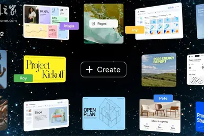
promaxplus
2026最新Claude訂閱方案：免費版、Pro、Max 價格與功能比較
Claude一個月多少錢？本文整理Claude免費版、Pro、Max、Team與Enterprise價格，並分析與ChatGPT、Gemini差異。
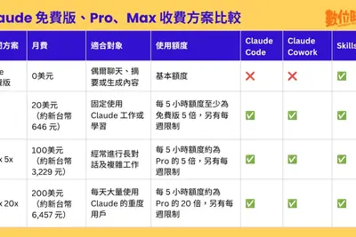